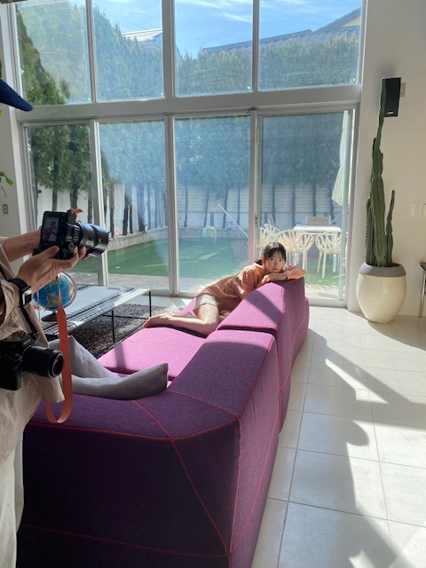

2021/0226Fri一度あった事は忘れないよ覚えていないだけで
歌や映画や人物のすてきな言葉に
たくさんの影響を受けてきました
すてきな言葉があるから毎日頑張れています
言葉だけじゃなくても
"希望"みたいなものを与えられる人になりたい
ざっくりとしているようで案外具体的な
わたしの人生の目標がこの24年間の間でできました

明日発売のBUBKA
2/27 BUBKA 4月号表紙発売
2/27 16:30〜 NHK総合「坂道テレビ」
2/28 18:30〜 テレ東系「楽しく学べる！最強教科書クイズ」
よろしくお願いします☺︎
最近はいろんな準備を毎日していまして
バタバタ。ありがたいですね。
またお知らせします
3月28日の2期生ライブが
最後の活動となりました
残り1ヶ月...案外最後が近くて
今ようやく実感してきています
1期生の皆さん、3.4期生のみんなとのライブは
先日のバスラが最後でした
みんなの笑顔が改めて大好き。
ずっと憧れだったしこれからもそんな存在の先輩方、
かわいくて放っておけない妹のような後輩たち、
いつもサポートしてくださるスタッフさんに
応援してくださるファンの皆さん
たくさんのすてきな出会いがあったから
こんなにも"人"を、
"乃木坂"を好きなれたんだと思います
とあるオーディションに最終審査で落ちて
悔しい思いをして岐阜に帰り、
それからはバイトをしながら毎日何となく
過ごしていました
そのあと、乃木坂のオーディションに
最後の挑戦として受けて合格することができたあの日からわたしの人生は大きく変わりました
どんな道だろうと
どんな靴を履いていようと
わたしらしくまっすぐ歩いて
いきたいと思います

もう3月ですね
花粉に負けず新生活に向けて
一緒に頑張りましょう~
みおな


コメント(821)
桜の花がこちらも遅まきながら、あちこちに顔を出し
始めています。
日本では桜は新しい世界に自ら飛び込んでいく象徴的な
存在でこの季節を迎える度に頑張ろうって思います。
俄然、正月よりこの季節、桜を見ると晴れ晴れとした気分
になり頑張らなきゃって奮い立ちます。 ホントホント（笑）
でも庶民レベルでの花見が定着したのは江戸時代の
中期？から位で、長い日本の歴史から見るとまだ最近の
風習らしいですよ。
流行らしたのはあの暴れん坊将軍の俳優、松平健！！
では無くて（笑笑）・・第８代将軍徳川吉宗らしいです。
古く起源は奈良時代の貴族の道楽、趣味、嗜みですって。
所ジャパン？？を見てだったと思います。（笑笑）
さて、桜は旅立ちの季節ではありますが、それぞれの
過去に別れを告げていく季節でもあります。
未央奈が旅立つ日まで後２日となりましたね・・・
乃木坂の堀未央奈・・２期生の未央奈としては最後なん
ですね。
やっぱ寂しいですね。
明るく祝わなきゃっても、やっぱ寂しいです。
メンバーみんなで映る事が無くなっちゃうんだって
今更ながら痛感しております。
まぁ～、これで乃木坂みんなと縁が切れる訳では無いし
ＯＧとしてこれからも関わりが続く事もあると思うので、
よろしくお願い申し上げます。m(__)m・・（笑笑笑）
それを楽しみにしております。 すずほり、ほりひな
ほりらんぜ・・エトセトラ、エトセトラ（笑）
最後の未央奈のメッセージありますよね？（笑）
楽しみにしております。 今日かな？明日かな？
卒業日～２期生ライブ後かな？
インスタもたくさん更新される事待ってます。(^-^;）＞
楽しみにしております。m(__)m
それじゃあ、今日一日もご苦労様でした。
今宵もおやすみおなぁ～ （笑）
・さよーならほりっぴー♪君の眩しい笑顔が〜いつでも皆の心に降り注ぐ〜♪
さよーならほりっぴー♪君には涙が似合わない〜いつでも皆の心に灯火を〜♪
さよーならほりっぴー♪君と過ごした8年が〜いつでも皆の心の思い出さ〜さよーならほりっぴー♪さよーならほりっぴー♪またー笑顔で会いたいなーーー♪
・卒業ソング風に書いてみたよ。笑
これからも頑張って応援してるから！
おはようございます
書きたい事盛りだくさんです！
まずは、ブログクローズのお知らせが来てしまったので、いよいよコメントもできなくなっちゃうから、これから毎日できる限りコメントしようと思います！
卒業するからブログクローズは当たり前と言えば当たり前だけど、とても寂しいです→いつかみおなも卒業したらブログクローズされちゃうのかって思ってたら、いよいよ来てしまった…
今の最新ブログに、ブログクローズまでできる限り毎日書こうと思ってるので、よろしくお願いします→仕事で出来なかった時は許してね
新しく更新したら、そこに毎日書こうと思います
書きたい事たくさんあるけど、小出しにしてくので、短い時も長い時もあるけど、どうかみおなの目に届いてくれたら嬉しいです
明日の2期生ライブ、しっかり見守ってるので、ラストステージ頑張ってね！
ありがとうございました
こんな間際でなんなんですが！
以前にコスプレの話がありましたが・・
思いつきました！ 聞いてください！
袴姿です！ 大正時代の大正モダン風のシックだけど
はいからな女学生の着物に袴！ 卒業って事で。
黒いブーツも必須アイテム！
「ちはやふる」の千早、「はいからさんが通る」の紅緒
「花子とアン」の吉高由里子の花 ｅｔｃ，ｅｔｃ
大正時代の女学生の格好を！
最後に見たい！見たい！見たい！
出来れば２期生全員とのコラボで！（笑）
少なくとも絢音ちゃんとのツーショットを・・m(__)m（笑）
髪型も大正時代当時の形で・・・(笑)
たのんます。たのんます。たのんます。m(__)m 笑笑
では今日も一日よろしくお願いいたします。 m(__)m
デハデハ
大正モダンの女学生には日傘が必須！？（笑）
ヨロ（笑笑）
ではは
お疲れ様な〜
デビュー当時を思い出すと可愛くてな、、、笑
元気にやれよ。
、、終わりが、、近くなっているね～
～私達は、焔を燃やした～自分を導くために～よりよく生きるために～
～森や麦畑、小鳥や蜜蜂から、遠く離れて～1つの焔が通り過ぎていく～澄み渡った、爽やかな夕暮れのなかを～
、、じゃあ、、またね～
未央奈のプロデュースグッズ買わせて頂きました！
食い入るようにサイト見てたよ！笑
チェーンバックとボディバックとポーチとブローチ&キーホルダー買いました！
合わせて未央奈の卒業記念グッズも買いました！
未央奈は私の始めて出来た推しメンで、とても大事な存在なので出たら絶対買うと決めてました！
プロデュースグッズも全て良いものばかりで、本当は全部ほしい気持ちですが厳選して買わせて頂きました。
全部大事にするね！
届くのが本当に楽しみです✨
そして先に届いた未央奈パーカー早速袖を通しましたが、最高にいいですね！
生地がしっかりしているし、本当に可愛い…❤️
明日の２期生ライブは未央奈パーカーを着て観ます！
ブラックを一次では買ったけど、とっても良かったのでホワイトも買ったよ！
未央奈、本当にセンスいい～！！
アップトゥボーイも買いました！
記事も読んだよ。
未央奈のグラビア美しすぎたよ…✨
この後のAbemaTVの特番も観るね！
大好き～❤️
いま「世界一受けたい授業」見てます。
ジブリの鈴木プロデューサーが出演してジブリ作品・・
って言うより宮崎駿監督のアニメについての向き合い方
などを解説してくれました。
あぁ～面白かった・・
で、ですね・・未央奈の好きな・・で、自分も好きな
「耳をすませば」のエンディングは宮崎アニメの真骨頂
的な説明をしてくれました。
「アニメは歩きに始まり、歩きに終わる」これに尽きる
って事が宮崎駿の信条なんですって。
なるほど！ポン！ 納得！
「耳をすませば」のエンディングは色んな人達が行きかう
シーンですが、出て来る人の歩くスピード、歩幅、動き
で全ての人物の年齢が分かるようになっているんですって。
確かに自分も数ある宮崎作品のエンディングの中
「耳をすませば」は特にカントリーロードの歌に合わ
せて色んな人達が行きかう、なんて事の無い普通の日の
ワンシーンこそ雫と聖司の日常であり世界を描き出して
いるんだって、そこは気づいていました。
それで、そこが好きなんですが・・・
そんなに緻密に人と言う物を捉えて「歩く」って
動きだけで全てのキャラに特徴を付けていたとは・・
全てが全て計算付くしだったとは、改めて宮崎駿監督の
偉大さを思い知りました。 素敵ですね。
ホントにアニメと言う世界で作品を作る事が好きなんですね。
未央奈も、自分も自分の生きて行く世界で精一杯
色んな事を考えながら頑張って行けたらって、いや
お互い頑張っていかなきゃ！て思いました。（笑）
インスタ５０万人おめでとうございます。
まだまだこれから！ まだまだ増えますから～～笑笑
それでは・・また
AbemaTVの２期生８人だけ！観ました～！
２期生の仲の良い、わちゃわちゃ感が観れて嬉しかったよ☺️
視聴者参加型でそこも良かったし、もちろん全部投票したよ！
ほとんど投票したものが採用されました！
なんか嬉しい♪
２期生ライブへの楽しみがより深まったし、本当に楽しい番組でした！
みんなお洋服も可愛かった❤️
未央奈のお洋服も可愛かったし、スタイルの良さが際立ってた！！
改めて、明日卒業するんですね…。
寂しいけれど、未央奈の有志を見届けます！
明日は未央奈達にとっても、私達ファンにとっても特別な日になりますね。
大切に大切に見届けます。
最初の衣装可愛いんだね！
未央奈がプロデュースしたの？
楽しみだな～❤️
明日！3月28日！
２期生ライブ、頑張ってください！
そして楽しんでくださいね！
心から応援しています！
おにぎり未央奈可愛かったよ～☺️
明日で乃木坂最後のライブ！
最後まで頑張って！
応援してるよー
寂しい～
頑張って下さい。
そうですね、以前堀さんのブログにコメントした時に伝えようと思っていたけど伝え忘れていたことがありまして、堀さんが表紙のBUBKA 2021年4月号、買いました。
そうですね、時々堀さんが出演している番組を観たり、時々堀さんが登場している雑誌を買ったり、気まぐれに堀さんのブログにコメントしたりしてですね、そうですね、そんな大層なものでもないかもしれないですけどね、なにか少しは僕は堀さんの力になれることあったかなと、最近少し考えましたね。
そうですね、個人的な話ですけど、アイテムが欲しいとかもあるのですけど、どちらかというとストーリーが気になって乃木恋をプレイすること、あるのですけど、そうですね、堀さんの恋愛ストーリー、全部解放しましたね
そうですね、先程ABEMAで配信されました、乃木坂46堀未央奈卒業&2期生ライブ前日記念！の配信、視聴しました。
やっぱりね、堀さん、乃木坂46 2期生、楽しいなと思いましたね
それでは、今日はこの辺で。
明日の乃木坂46 2期生ライブ楽しみにしています！
いよいよ、2期生卒業コンサートの当日を、迎えられましたね。
未央奈さんの最高のパフォーマンスを、期待しています。
卒業して女優さんになられても、これからもずっと未央奈さんを、応援していきます。
未央奈さんに、明るい未来が訪れる様に、心から願っています。
頑張れ未央奈さん！
abema見ました。2期生で居るときの普段の感じが出てるみたいで面白かったです。リボンも服も可愛くて、おむすび姿も似合っててスタイリッシュでマイフェアレディの競馬場かと思いました。
鈴木さんと変人同士で惹かれ合ってるのがゴルゴンゾーラみたいでしたね。変人を十二分に発揮できるし他の変人にも勇気を与えることになるから堀さんが芸能人になってくれて良かったです。
ちなみに僕の思う堀さんの好きなところは顔が明るくて人を元気に出来るところと、不屈の前向きさを持ってるところと、相手の気持ちに敏感で楽しませようとするところと、和装と男装が似合うところです。
では、2期生ライブはオープニングの衣裳も注目しますね。無理するななんて言わないので、無理してでも想い全部ぶつけて楽しみ尽くして味わい尽くして最高のライブにしてくださいね。堀さんのアイドルとしての最後の瞬間まで、しっかり見届けます。今日も、今日を思い出す8年後も、沢山笑えたらいいですね。
ついに明日は2期生ライブですね(o^^o)
待ち遠しいようで、来てほしくないような、複雑な心境でごめんなさい( ´ ▽ ` )笑
堀ちゃんが乃木坂46として最後の活動ですから、やっぱりもちろん寂しさは大きいです( ´ ー ` )
それでも、大好きな堀ちゃんの最後の晴れ舞台、しっかりと目に焼き付けて、見送る心構えもできているつもりです(^^)
終わった後には「おめでとう」と「ありがとう」をしっかり伝えられるように、ライブを観ながら楽しみつつも送り出す気持ちにシフトしていきたいと思います(o^^o)
ずっと大好きでしたから、最後まできちんと( ´ ー ` )
今日はAbemaTVで「2期生8人だけ！」観てました(o^^o)
随所で感じるコメントであったり、おにぎりの被り物を被って全力で振り切っているところ、そして本当に可愛いお顔(*´ー｀*)
やっぱり大好きだなぁと思いました(^^)
この前のレコメン!もめちゃくちゃ楽しかったし、明日のライブも乃木中も絶対楽しいでしょうし、「いつのまにか」のTwitterを見ていても、堀ちゃんのインスタを見ていても、ほんとに可愛くて、卒業を間際にして堀ちゃんからまた離れがたくなってしまっています(*´ー｀*)笑
改めて、いまさらですが、ずっと大好きでした(o^^o)
明日は画面の前でひたすら堀ちゃんの姿を追いかけていようと思います(^^)
堀ちゃんの最後の時間が悔いのないものになりますように、そして自分にとっても悔いがない時間にしたいです( ´ ▽ ` )
日付が変わって、2期生8周年おめでとうございます、明日はそんなお祝いの想いも届けー！と思いながら、遠くからですが応援しています(o^^o)
明日、堀ちゃんにとって、2期生にとって、ファンのみんなにとって、かけがえのない時間になりますように(*´▽｀*)
心から、全身で、おもいっきり応援しています！
しかしながら！ やっと念願が叶ったのでコメします。
「光の角度」・・やっと、やっと絢音ちゃんとの共演
実現していただきまして、ありがとうございます！
待ってたんですよ！ ほんと待ってたんですよ・・・涙、涙
長い・・長すぎる・・もう半分以下、いやいや全くもって
諦めかけてましたよ（笑笑笑）
今日も無駄かなぁ～なんて思いながらツイッター見たら
おぉ～～～～！ 深夜なのに思わず声が出ちゃいましたよ。（笑）
夜も遅いんで・・眠いんで・・ここで終わりますが・・
感謝感謝、感謝です。
絢音ちゃんにもこれから「ありがとう～」コメ入れます。（笑）
寝んのんかぁ～い！！ バシッ！！！！
でははのは
ほんとに今日までお疲れ様でした。色々な夢と感動を与えてくれて感謝しかありません。堀ちゃんの乃木坂人生のゴールテープを切る、まさにファイナルステージです。悔いなんかひとつも残さずやり切ってきてください！！
今日は、いよいよ２期生ライブ当日
未央奈の最後の晴れ舞台だね
楽しみだけど
涙を堪えきれるかなぁ。。。
今から言うことは
独り言です
乃木坂46というグループは
メンバー一人ひとりが輝いていて
素晴らしい個性の集まったグループです
誰かに足りないところがあったら
誰かがそれを補うことのできる
あたたかいグループです
失敗しても
きちんと反省は反省として
それを今後の活動で返していける
気風のあるグループです
誰かが困っていたら
手を差し伸べてあげることのできる
素敵なグループです
そんな乃木坂46は
世界一素晴らしいグループです
いよいよ今日は２期生ライブ当日ですね。
早く目が覚めてしまいましたが、この日が来てほしいような、来てほしくないような気がして、わざと布団に入っていました…。
やはり寂しいね。
そんなことを言っても今日はきました。
未央奈のラストステージ見届けます！
悔いなく楽しんでね！！
頑張れ～！未央奈！
大好きだよ❤️
またコメントするね。
さぁさぁさぁ堀ちゃん、さぁ堀ちゃん。
今日はいよいよ2期生ライブだねっ！
準備はばっちりかな？
こちらはばっちりだよ！
ライブ、思いっきり楽しんでね
推しが卒業するの辛いな…
またコメントします！
２期生ライブ
楽しんで笑顔で頑張って！！
これからもずっと
応援していきます！！
こんにちは╰(*´︶`*)╯♡
前夜祭、バースデーライブお疲れ様でした！
2日間共観てたよー
素敵なライブでしたね(๑>◡<๑)
9歳のお誕生日おめでとうございます！
いよいよこの日がやってまいりましたね
待ちに待った2期生単独ライブですねー
Abemaでの配信も観ましたよー
お休み取れたので見守ります✌︎('ω'✌︎ )
2期生との最後、みおなちゃんの卒業で寂しさもありますが楽しみにしてます！
頑張ってねー
いよいよ本番当日ですね
ハンカチを用意して鑑賞しますね
そうそう、注文し忘れていた
未央奈ちゃんプロデュースの
ビッグパーカー注文しました
黒か白かで悩んだんですが
悩むくらいなら両方買ってしまえと
注文しました
届くのが楽しみです
オードトワレ ドゥも一緒に頼みましたよ♪
どんな香りなのか楽しみです
それでは
この後ライブでお会いしましょうね
２期生ライブ、いよいよ今日ですね。楽しみにしてます。
昨日の前日祭、２期生結束の強さを感じました。被り物もナイスでした。
明日から寂しくなるなー。またリプします。
しかも、ブログクローズもしちゃうから乃木坂の時間も
数えるくらいになりましたね。。
この日が来るのはわかっているけど、今日になると悲しみが、
一層湧くものです。
自分は未央奈さんの歌声がすきです。
例えば、「いつかできるなら今日できる」の「風は〜何を〜」
のソロのところきれいでいい声だなーって思ったよ。
乃木坂にいてくれたこととても感謝してます。
未央奈さんがいてくれたから2期生もがんばれたこと
いっぱいあったと思うよ。
今日のライブ悔いを残さないように楽しんでください！
（きっとみんな楽しんでいる未央奈さんがみたいと思うので…。）
あーもうすぐだー。ではではライブでー！
絢音とみり愛もファイトやで～
勿論、眞衣たん、社長、れにゃた、なーこ、純ちゃんもな
今年の東京の桜の満開は例年よりも早かったようですが、未央奈さんのご卒業に合わせたかのようですね。散り始めた桜の花びらも空高く舞い上がって、未央奈さんのこれからの飛躍を予見しているかのようです。
刻々と迫っていますね、8人の絆を披露してもらえるのが。
はじめまして〜♡未央奈ちゃん（本当は「みおなさま♡」とお呼びしたいところではありますが、各方面への影響と、今後について慎重に熟慮を重ねた結果、ちゃん呼びが妥当であろう！という結論に達しました♡ので♪そう呼ばせていただけますれば、幸い至極に存じ申し上げ奉ります〜♡……で、何でしたっけ？）のファンになって、早くもこの時が来てしまいました。
今さら初コメント、ファンとして関われた時間も僅かですが、未央奈ちゃんの卒業を見届けられる幸運に感謝しています♡
２期生ライブ、画面の前で応援しています♡
楽しみましょ〜♪ かしこ
今日のライブ頑張ってください！
いつも、今日もお疲れ様です‼︎m(_ _)m
と、本当に久しぶりのコメになってしまいましたm(_ _)m
とうとうこの日が来てしまいました(T-T)みおちゃんの卒業コンサート。空も一緒に泣いてるね…。
でもみおちゃんが大好きな乃木坂46を卒業するとても大事な卒業コンサート。画面越しだけど俺なりに一生懸命に応援するね‼︎*\(^o^)/*純奈ちゃんも言ってたけど最後のみおちゃんをしっかりと目に焼き付けるね‼︎
だからみおちゃんは思い切り楽しんで、思い切り泣いて、思い切りパフォーマンスして、最高のコンサートにして、最高の沢山の思い出を作ってね‼︎‼︎(T-T)
最後の最後まで応援してるーーーっ‼︎‼︎みおちゃん、大好きーーーっ‼︎‼︎
それでは。画面前で待機してます。
これからもみおちゃんがずっと健康で、幸せでありますように…。
もう一度みおちゃんと握手会で会いたかった…。まきでしたm(_ _)m
今日は２期生の期別ライブですね
未央奈ちゃんが
出演する最後の舞台...
今からワクワクとソワソワと
そして、、、寂しさが
混ざり合って感情がぶわーっとなってます
卒業おめでとう
未央奈ちゃん！
未央奈ちゃんの未来に幸あれ！
最近は、いろいろと騒々しいです
厳しさと優しさと愛で
すべてを包み込んでください
これからも乃木坂と
未央奈ちゃんを応援してます
いよいよ乃木坂46での最後の
ライブが始まるね。
素晴らしいライブ、今から楽しみです‼️
今日の一瞬一瞬を
大事に
そして楽しんで下さい‼️
これから２期生ライブ応援します‼️
がんばれ‼️
頑張ってーライブ楽しみにしてます。
でも寂しいなぁー。
いよいよ、乃木坂ラストの日になってしまった。
私は、最初「乃木坂46？」つて感じでした。色々な音楽番組を観ていくに連れて未央奈ちゃんを見て、乃木坂が好きになっていました。
今までありがとう。
そして、乃木坂46でのお仕事お疲れ様でした。
これからは、女優や色々なお仕事が待っていると思いますが、頑張ってください！！
私は、堀 未央奈を応援します
新しい一歩を踏み出す時ですね。
大好きですよ。
目指せ年齢別ランク1位！100歳越えても生きてれば走れる ！
そして最後の活動になっちゃう日がとうとう
来てしまいましたね
今まで活動してきた仲間と会えるのも今日でラスト
楽しんでねー！
未央奈ちゃんが居てくれたからメイク
ファッションの事で乃木坂が注目されるように
なったんだよ。
ありがとう
大好きです❤
8年間本当にお疲れ様でした
2期生ライブ本当に良かったです。
母はいつでも強しだよぉ
基本家族はなにがあっても唯一味方です
2期生の初期本当に懐かしく思います。
初で、センターに選ばれてのプレッシャーは本当に凄かっただろうなぁと思います。
2期生は、研究生もあったから凄く苦労もあったと思います。
でも、未央奈の高速瞬きとか笑いをいれてくれて本当に楽しかったです。
始まりがあればいつかは終わりがあります。
出会いがあれば別れもあります。
経験はなによりも宝です。
未央奈と出会えて本当に良かったです。
ありがとう。
これから先、もっと苦しい事とか楽しい事とか幸せな事もあると思いますので、これからも頑張って
応援してます。
8年間乃木坂46としていてくれてありがとう
これからも頑張って
未央奈今日の2期生ライブ今までで1番綺麗でした。
これからの活躍楽しみにしてます
八年間ありがとうございます
今日も美しい、二級生ライブ大成功。
独特の個性が大好き、出会えてよかった、これからも応援し続けます。
卒業おめでとうございます
卒業しないでください> <
コメントする